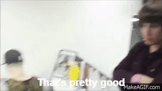

Hey, how's it hanging? This is my personal webpage, where you can learn some information about me. I'm a freshman at the University at Buffalo, intended Computer Science major, and I work at Tops as a cashier. I've lived in Cheektowaga, about 20 minutes away from campus, for the past 10 years and I lived in South Buffalo before then. I play vidya games sometimes, I'm into pop punk, and I like writing occasionally. There you go. All the basic filler info you need about me. Catch you later.
Here's an unordered list of some of the activities I enjoy, some of which I listed above.
And here's some Idubbbz
